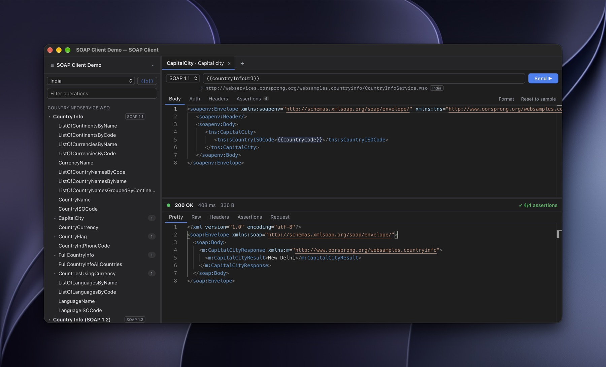
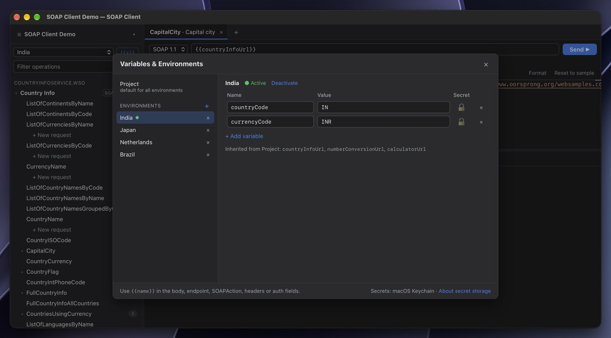
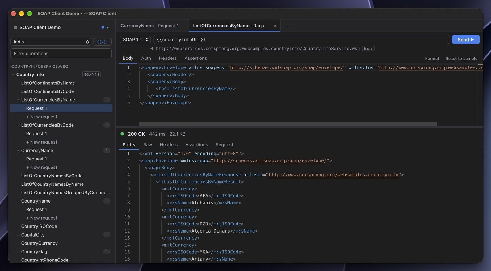
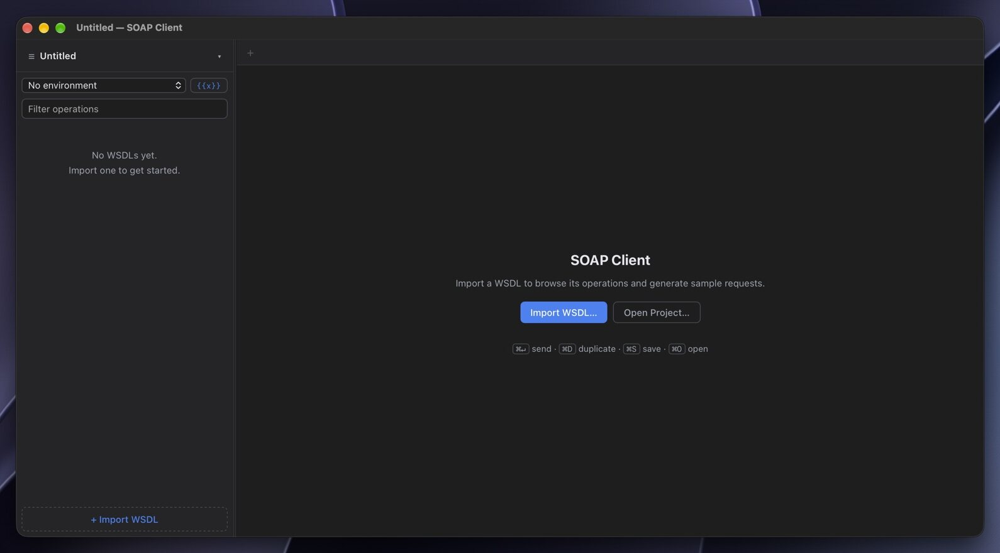

// free · open source · macOS & Linux
A clutter-free desktop client for the SOAP services you still have to work with.
macOS 11+ · Apple Silicon & Intel
<tns:CapitalCity> <tns:sCountryISOCode> {{countryCode}} </tns:sCountryISOCode> </tns:CapitalCity>
<m:CapitalCityResult> New Delhi </m:CapitalCityResult> ✓ 4/4 assertions passed

01Passwords live in your Keychain, unlocked with Touch ID. Never in project files.
02An 18 MB download with a native Rust core. No Java, no plugins.
03One window: pick an operation, edit, send. Everything autosaves.
04Every operation comes with a sample request, built from the WSDL.
05Same requests, different servers and credentials. One click.
06Status, XPath and fault checks run automatically on each response.


